Why the SFT-RL pipeline works, where on-policy distillation fits, and how self-distillation goes wrong.
Authors:
Will Brown & Claude Opus 4.7
April 30, 2026
[Editor's Note: Arguments are mine, writing is Claude's. This is partially an experiment in trying to get Claude to help speed-write and structure technical research blogs, drafted initially as artifacts and refined via "debate". I have too many blog ideas that I never get around to writing up, but the models finally feel good enough to help out with this (hopefully -- let me know what you think).]
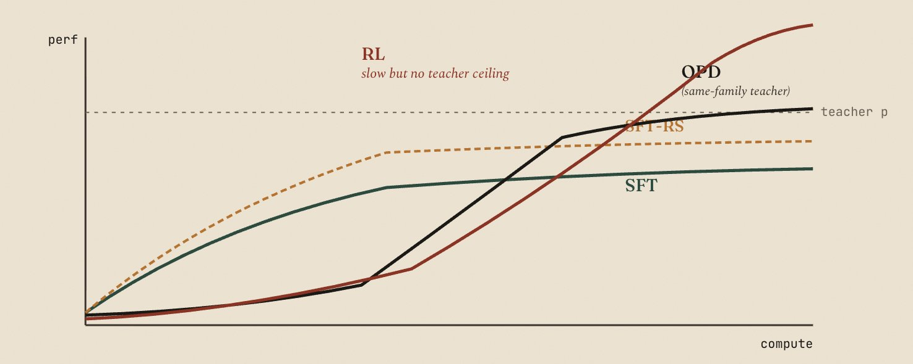
§1 — The standard pipeline and the compounding argument
Most post-training pipelines are some version of "SFT first, then RL" — pre-train, supervised-finetune to get a baseline, then run RL once SFT data dries up or stops moving the needle. People usually treat this ordering as a convention, but there's a real argument for it that's worth being explicit about. The argument is about which sampling distribution your method gets to compound with, and where the resulting performance ceiling sits.
When I say SFT in this post I mean
teacher SFT
: training on completions produced by some teacher model. (Plain instruction-tuning on human-curated data is the same shape, with humans as the teacher.) The defining property is that the sampling distribution is fixed at dataset-construction time. As the model improves during training, the data does not. Once the student gets close to the teacher's distribution, more SFT mostly memorizes — the marginal example is no longer informative. SFT's ceiling is roughly the teacher's.
RL is the opposite. The student samples its own rollouts, the gradient updates the policy, and the next batch is sampled from the improved policy. Improvements compound back into the sampling distribution. The ceiling isn't determined by the data — it's determined by whatever the verifier can grade.
This produces a tipping point. When current performance is far below the teacher and teacher data is cheap, SFT bits are extremely cheap-per-improvement — you're learning capabilities you don't have, from a source that does. As current performance approaches the teacher, marginal SFT examples get less informative, and the student's own rollouts start producing genuinely new strategies via lucky exploration that an RL gradient can extract. Past the tipping point, rollout compute is better spent on RL than on more SFT.
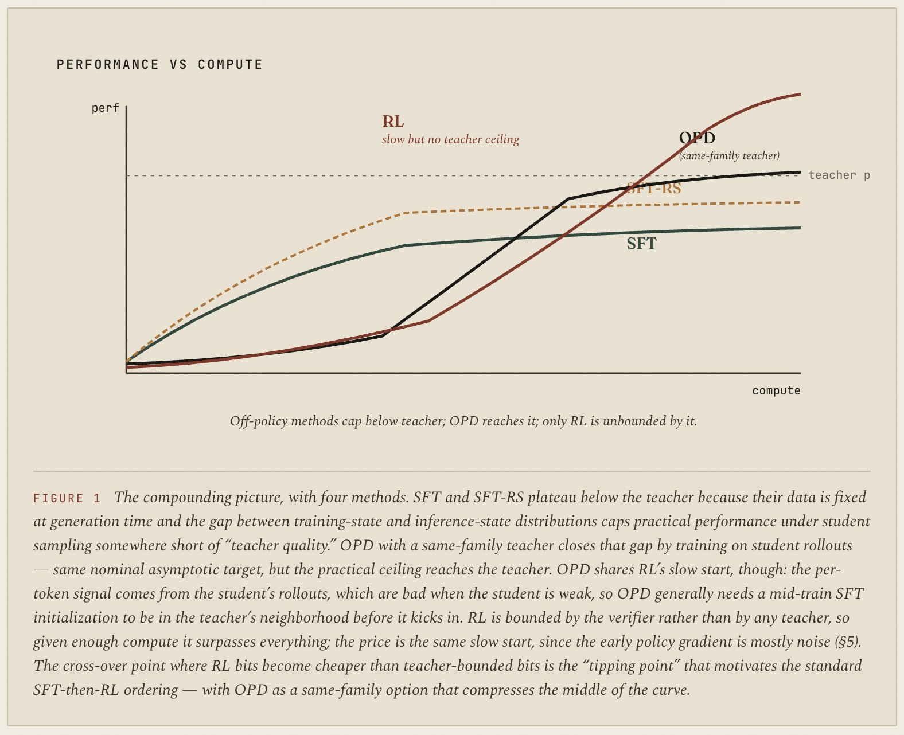
Rejection-sampled SFT (SFT-RS, sometimes RFT — sample from the teacher or the student, filter for correctness, train on the survivors) is strictly better than vanilla teacher SFT in expectation, but it doesn't fix the compounding problem. The sampling distribution is still pinned to whatever you're filtering. Once your filter saturates — everything correct is included, everything wrong is discarded — you've hit the same ceiling. SFT-RS shifts the curve up, but it doesn't change its shape.
None of this is new, but it's worth saying clearly because everything else in this post is about how to push past that ceiling, and the available moves depend on what you have access to.
§2 — Same-family vs. different-family teachers
"Doing SFT" involves choosing a teacher, and the teacher's relationship to your student is a major axis of efficiency that doesn't get enough attention.
Same-family teacher
means tokenizer-matched and recipe-matched: same vocabulary, same general training pipeline, ideally the same base model at different scales. Qwen3-32B teaching Qwen3-8B-Base is the canonical example, originating in the Qwen3 technical report and revisited prominently in Thinking Machines' OPD post. The teacher's outputs sit in a distribution that's structurally close to what the student naturally produces. The SFT signal — for each token, "the teacher would have said this" — is mostly about the capability gap, not stylistic differences. Per-token logprobs from the teacher are directly comparable to the student's, because the vocabulary is shared and similar training recipes produce similar distributional shapes.
Different-family teacher
means tokenizer mismatch, recipe mismatch, or both. Distilling a frontier closed model into an open base, or moving across model families. Two specific costs:
- Tokenizer mismatch means every teacher completion has to be re-tokenized in the student's vocabulary. You lose information at boundaries, and per-token logprobs no longer correspond to "the same prediction at the same position" between models. Soft-target distillation is essentially impossible without expensive workarounds.
- Recipe mismatch means the teacher's outputs carry stylistic and structural artifacts — how it formats lists, when it uses chain-of-thought, what register it speaks in — that are pipeline byproducts, not capabilities. The student has to absorb those alongside the actual content. A nontrivial fraction of the SFT bits go toward learning surface form rather than competence, and the resulting student often looks like a slightly worse version of the teacher's style without having internalized the teacher's reasoning.
Most cross-family distillation in practice loses something in the gap between "what the teacher knows" and "what the student can absorb without learning the teacher's pipeline." Same-family SFT is much more efficient per unit of capability transferred, even if you can't always afford to limit yourself to it.
This matters because the next move on the algorithm tree — on-policy distillation — is essentially only available in the same-family setting, and that constraint shapes the rest of this post.
§3 — On-policy distillation as the same-family upgrade
On-policy distillation (OPD, as in Lu et al. 2025 and the Qwen3 technical report before it) is the obvious move once you've laid out the previous two sections. The student samples its own rollouts — so you get RL's compounding in the sampling distribution — but each token in the rollout is graded by the teacher via per-token reverse KL:
The advantage at each token is "how much the teacher prefers this token relative to the student." Dense, on-policy, reverse-KL. The reported numbers are striking — roughly 9–30× less compute than RL on AIME-style benchmarks, with the gap widening when teacher logprob calls can be parallelized.
This raises a question that figure 1 implicitly answers: why does OPD's practical ceiling sit above SFT-RS's, when both target the same teacher? Cheaper sampling is part of it — the teacher only forward-passes over student tokens, which is essentially prefill, and prefill is much cheaper than generation. But that mostly buys faster convergence, not a higher ceiling. The deeper reason is on-policy state coverage. SFT and SFT-RS train under the teacher's state distribution but evaluate the student under its own; the exposure-bias gap that opens up over long rollouts caps off-policy practical performance somewhere short of "teacher quality" on the actual evaluation distribution. OPD trains on student rollouts, so the gap doesn't open. Same nominal asymptotic target, different practical ceiling.
The catch is that OPD requires a same-family teacher, and the dependence is harder than people often acknowledge. You need
tokenizer match
just to compute the loss — the per-token KL is between teacher and student distributions over the
same
token positions. You also need at least approximate
recipe match
, because the per-token signal needs to actually be informative on the things you care about. If the teacher and student were trained with very different recipes, the reverse-KL gradient is dominated by "the teacher would have phrased this differently" rather than "the teacher would have reasoned differently here."
So OPD is the "best of both worlds" corner only when you have a same-family teacher available. When you do, it tends to dominate
at moderate compute budgets
— do mid-train SFT to get into the teacher's rough neighborhood, then OPD instead of RL to approach the teacher's level efficiently (you get to explore with a smaller model, and prefill is cheap). The ceiling is a different question. OPD targets the teacher's distribution by construction, so in the limit it's bounded by the teacher; RL's ceiling is bounded by the verifier, which can be much higher. So the framing isn't "OPD beats RL," it's "OPD gets you to the teacher's level much faster than RL would, and most of the time that's where you wanted to be anyway." When you don't have a same-family teacher, you fall back to either cross-family SFT (eat the recipe-mismatch tax) or RL (eat the sparsity tax) — or, more recently and speculatively, to self-distillation.
§4 — When you don't have a same-family teacher
The natural response to "OPD is great if you have a same-family teacher" is "what if I don't?" Self-distillation tries to answer this by using the student itself as the teacher, with privileged information in the teacher's context that the student doesn't see at sampling time. Two instantiations have shipped recently; they share the same algorithmic shape and differ only in what privileged info goes to the teacher.
SDFT
(Shenfeld et al. 2026) conditions the teacher on an
expert demonstration
— a worked example, possibly for a different task. Student samples a trajectory without the demonstration in context; teacher computes per-token logprobs over the trajectory while seeing the demonstration; student updates toward teacher via reverse KL. Fully on-policy. The demonstration provides distributional pull without leaking the answer, and the paper makes the assumption underpinning this explicit (more on that in §8).
OPSD
(Zhao et al. 2026) conditions the teacher on the
ground-truth answer
instead. Same setup otherwise. The teacher knows where the trajectory is supposed to end up; the student doesn't. This produces a much sharper distributional shift in the teacher than a demonstration does.
In both cases tokenizer match is automatic (same model). Recipe match is automatic (same model). What you trade for that is that the privileged-info conditioning
shifts the teacher's distribution
— modestly for SDFT, more aggressively for OPSD — away from the student's natural distribution.
Both sit at exactly the same dial settings as OPD. The only difference is the choice of teacher. That difference turns out to be where the failure mode lives.
§5 — The geometry of gradients
To see why, it's worth working through what each method's gradient actually looks like in parameter space. The shapes are different in instructive ways.
RL: sparse, but saved by destructive interference
The standard complaint about RL is one bit per episode — a binary "you got it right" spread across thousands of tokens. The framing I find more useful: the apparent sparsity is what keeps RL's gradient updates honest.
In a GRPO-style step, every token in every rollout gets an advantage. Within a group, the advantages have approximately zero mean by construction (subtract the group baseline) and some variance. Each per-token advantage gets multiplied by the gradient of the log-probability of that token, producing a vector in parameter space. The total update is the average over the batch.
Most of those vectors are noise. Reward is sparse and broadcast-assigned; most tokens didn't actually contribute to whether the answer was right. Their advantages are nonzero only because they happened to share a trajectory with a reward, not because they were causally responsible for it. So the batch contains a swarm of small, mostly-random parameter-space vectors, with a small consistent bias along whichever dimensions actually correlate with reward ("think longer," "double-check arithmetic").
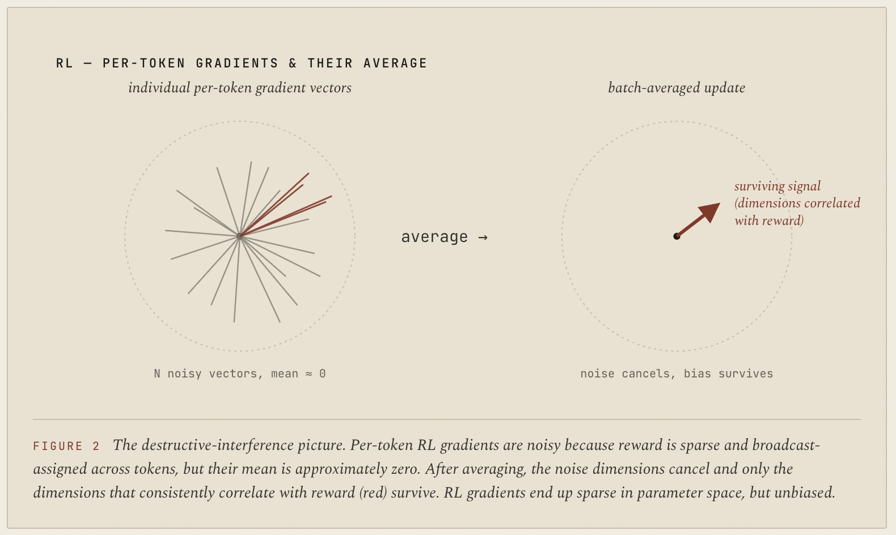
The reason large-batch, low-learning-rate RL is robust is not that each per-token gradient is informative — most aren't — but that the uninformative ones cancel. What survives the average is the small consistent component along the directions that actually correlate with reward. There's some empirical support for this: RL updates have been observed to be sparse in parameter space, modifying small subnetworks. That seems like the destructive-interference picture cashing out.
It also explains why RL feels "safe but slow." Each step moves the model a tiny amount in a direction you can trust. The sparsity isn't purely a bug; it's the price for an unbiased estimator.
SFT: dense, biased, but spread out
SFT does the opposite. Every token gets a one-hot label. The gradient density is enormous — one informative update per token, no broadcasting required.
But the SFT gradient distribution does not have zero mean. By construction, it's biased toward the data distribution. There's no analog of advantages cancelling. Constructive interference, not destructive.
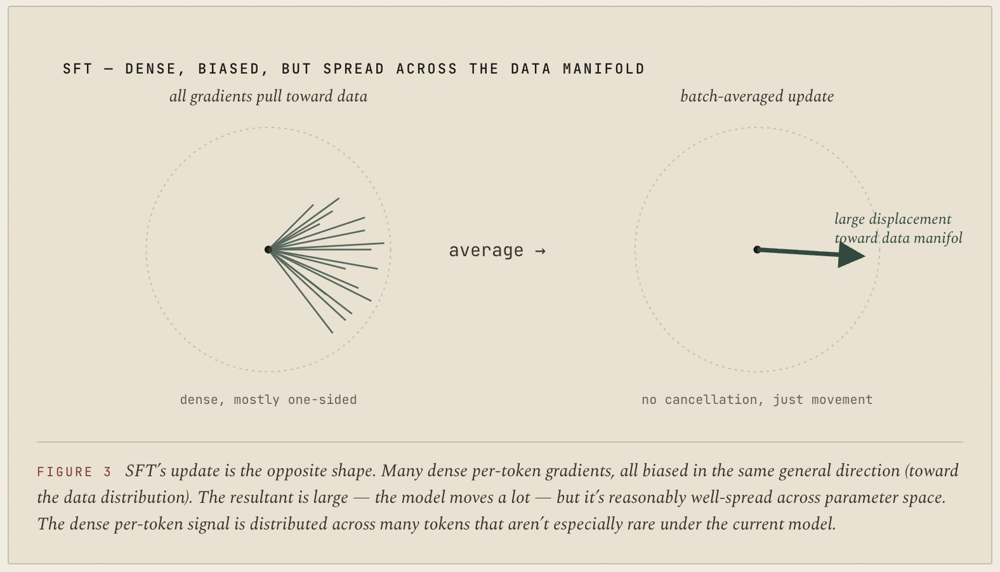
So why doesn't SFT blow up? Two reasons. First, the data distribution is itself diverse: the bias points in many slightly different directions across many examples, so you get a soft principal-components decomposition where the model drifts toward the data manifold as a whole rather than any one example. Second, SFT is
diffuse
. Most of what an SFT step is doing is reinforcing things the model already half-knew. There aren't many tokens where the data is asking the model to put large mass on something it currently treats as near-zero probability.
This is why SFT is forgiving. The data can be a bit messy, the learning rate can be a bit off, and you mostly drift. The bias is real, but it's unconcentrated.
OPSD: dense, biased, and concentrated
OPSD's gradient has a different shape from either of the above, and the difference is instructive — it points at why pure self-distillation isn't quite the final answer.
Consider a long math rollout where the student gets the answer wrong because, somewhere in the chain of thought, it failed to make a key observation — pick the right substitution, notice a trick. Call that token (or short span) the
pivot token
. For the student, the probability of producing the pivot token might be very low — say 0.01. For the teacher, conditioned on the answer, the probability of that same pivot token is much higher — say 0.6, because once you know where the solution is going, the right substitution becomes obvious.
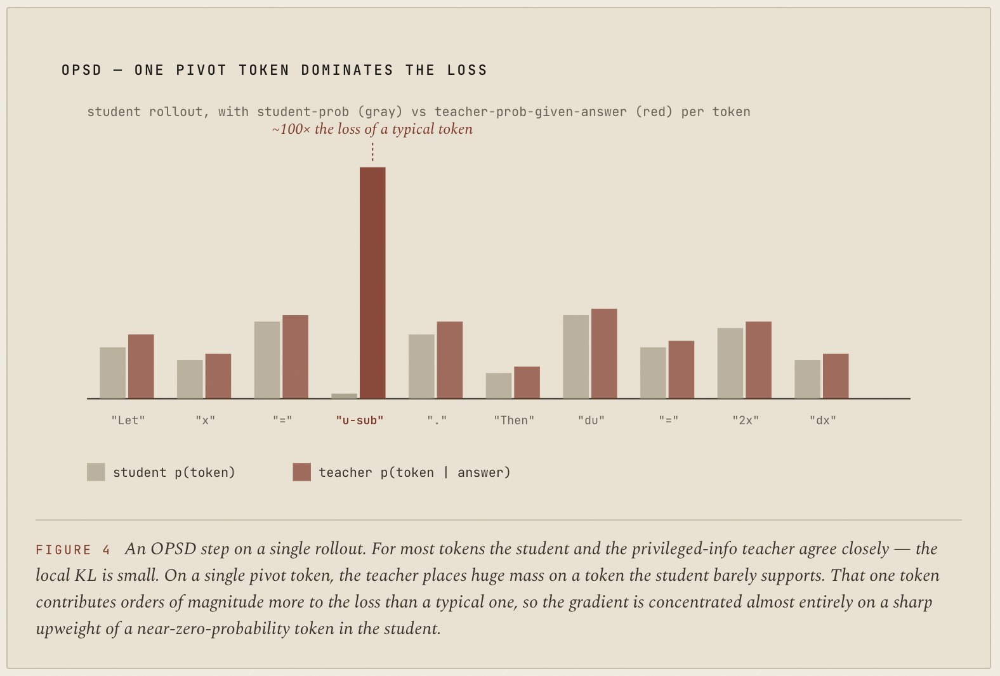
The per-token reverse KL between "student says 0.01" and "teacher says 0.6" is roughly
log(0.6/0.01)
~= 4.1
. For a typical token where both put around 0.3, the contribution is essentially zero. So one pivot token contributes on the order of a hundred times more to the loss than a typical one. The gradient is dominated by it.
What does that gradient do? It pushes the student's log-probability of the pivot token up sharply, given the prefix. The corresponding direction in parameter space is "make this rare token less rare in this context." Critically, this update is
not
being averaged against many other vectors pointing different directions. RL's saving grace was that noise vectors cancelled. SFT's saving grace was that bias was diffuse across many tokens that the student already supports. OPSD has neither. One concentrated tug, in one step, toward a region the model didn't previously believe in.
OPSD ships with
per-token point-wise KL clipping
— cap the per-vocabulary-entry divergence contribution at each position so that, in their words, "a small subset of stylistic tokens [doesn't] dominate the training signal." Without it, the paper reports performance collapse within ~100 steps. That's figure 4 cashing out. The fix works, and what it tells us is direct: the KL signal in self-with-hint distillation is concentrated enough that you have to budget it. The next move, then, is to look for a teacher whose KL is naturally diffuse, rather than relying on clipping to make a concentrated one tolerable.
§6 — The sparse/dense × biased/unbiased family
The gradient analysis above places each method in a small taxonomy. The two main axes are sparse vs. dense (does each token get a signal, or just the trajectory) and biased vs. unbiased (does the expected gradient point in a fixed direction relative to the student, or only along the directions reward correlates with).
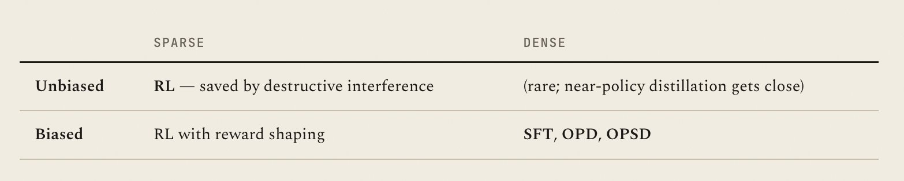
SFT, OPD, and OPSD all live in the "dense, biased" cell. They're distinguished by where the bias points (toward the data, toward a same-family teacher, toward self-with-hint) and, more importantly for the failure-mode analysis, by how that bias is distributed across tokens. That's the third axis —
concentration
:
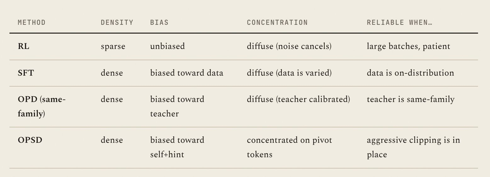
This is the punchline of the geometric analysis. RL is sparse but unbiased. SFT is dense and biased but diffuse. Same-family OPD inherits SFT's diffuseness because the teacher distribution is calibrated to the student's family. OPSD is the unique case where you get density, bias, and concentration at once — which is why it ships with explicit defenses (KL clipping, fixing the teacher to the initial policy) that the other methods don't need.
§7 — An illustrative meta-algorithm
All four methods are special cases of a single token-level policy gradient:
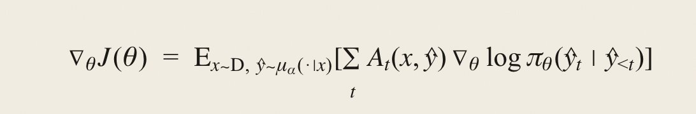
with two scalar knobs and a teacher-policy choice:
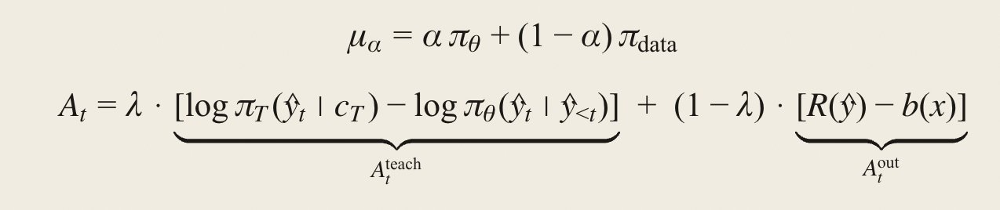
- α ∈ [0,1] — how on-policy the sampling distribution is.
- λ ∈ [0,1] — how much of the per-token advantage comes from a teacher KL versus a sequence-level outcome reward.
- π_T — the teacher policy: which model, conditioned on what context c_T .
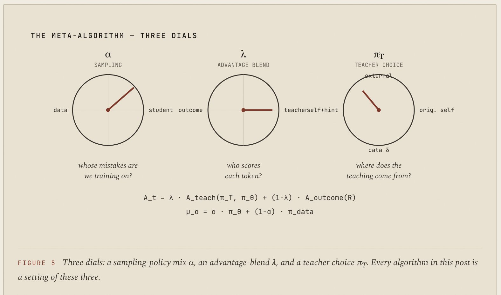
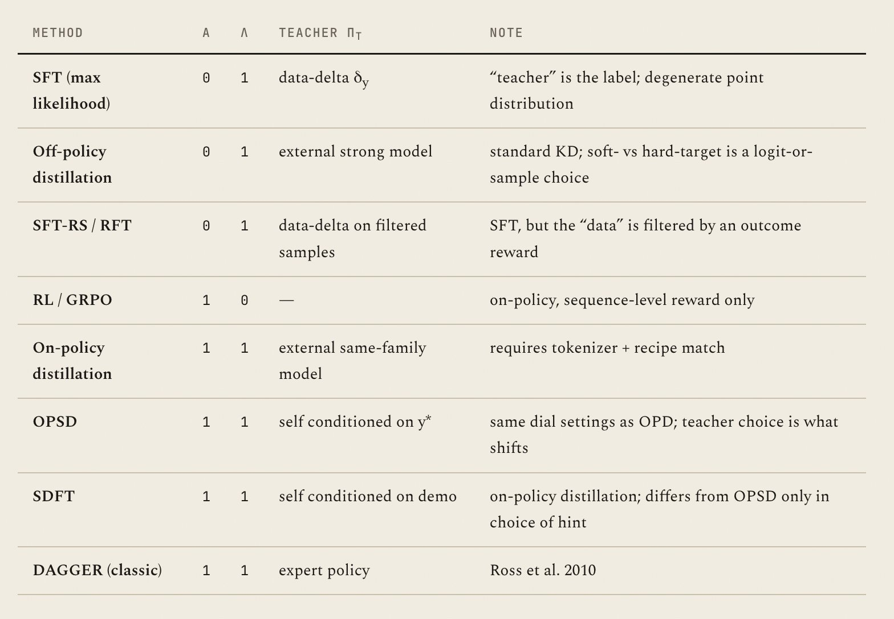
Once you fix α and λ, almost everything that matters — bias, concentration, stability — is a function of how π_T differs from π_θ at the per-token level on the student's rollouts. The interior of this space — α, λ ∈ (0,1), or mixed teacher choices — is mostly unexplored, and seems like where the next round of progress lives.
A few things drop out:
- SFT is "distillation from a degenerate teacher": letting π_T(y|x) = δ_{y_data}(y) recovers cross-entropy up to constants. The reason SFT is safe is not that this teacher is bad — it's that it's averaged across many varied examples, which makes the bias diffuse.
- RL is "no teacher": set λ=0 and the per-token signal collapses to broadcast outcome reward. The destructive-interference story follows from this.
- OPSD has identical dial settings to OPD: the only difference is π_T. That clarifies why it can match OPD when it works (same algorithm) and why it's where the failure mode is sharpest (most distributionally aggressive choice of teacher).
A caveat about what this factorization is for: it’s illustrative of the
kind
of algorithm conceptually aligned with the Pareto / SFT-RL phase-change picture — not a recommendation to mix sources at intermediate (α, λ). I’m not sure that’s even a useful algorithm. The clean corners (SFT, RL, OPD) are where the statistics work out without importance-sampling corrections, and they correspond to qualitatively different regimes that differ mostly in the KL budget β. The interesting axis of variation across them is β; interpolating α and λ is a tangent.
The practically-interesting structure looks more like “pick β, then find the best teacher for that β.” The meta-algorithm above makes the corners visible, but the actually hard problem is the inner one — and teacher optimization isn’t clean or cheap. It’s typically discrete (which model? which prompt? which hint?) and doesn’t decompose neatly into the gradient framing. The Pareto picture in §8 is where that question actually lives.
§8 — Toward an optimal teacher
The geometry analysis turns the optimal-teacher question into an optimization problem. We want a teacher policy π_T that produces a large reward improvement on the student per step, subject to a hard KL constraint that keeps updates stable. In Lagrangian form:
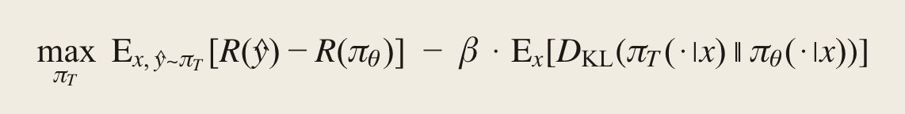
This traces a Pareto curve as β varies. Different methods are different points on it.
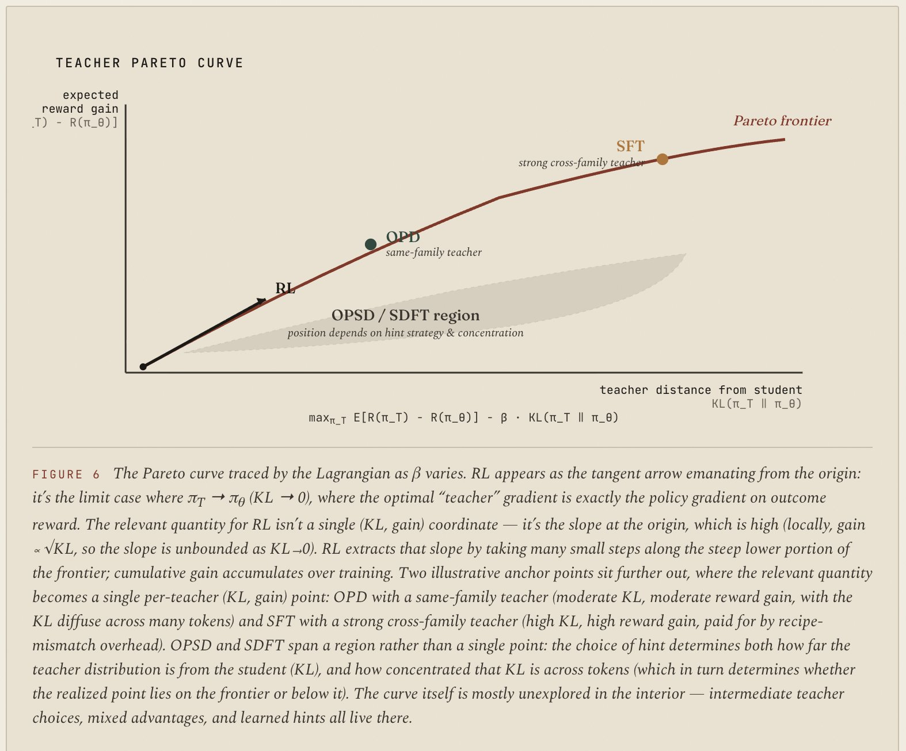
The SDFT paper's framing is worth engaging with directly here, because it offers a candidate route to the curve's interior that doesn't quite work for the reasons we want it to. The paper formalizes the
ICL assumption
— that a model conditioned on an expert demonstration approximates the optimal policy for the task — and conditions its analysis on the availability of such demonstrations. That assumption is doing a lot of work. Practically, this gives a similar ceiling (conceptually) to SFT and SFT-RS: you're only as good as the demonstrations, and you can't bootstrap beyond them.
We'd rather be in a world with curves more like RL, where the ceiling is only a function of our ability to verify, even if we can't always solve (without extremely expensive sampling). We can make weaker assumptions about the ability to verify (which we need anyway if we want to measure performance) plus mild regularity conditions on the distribution: that performance in accuracy degrades gracefully across the task distribution in a smooth latent space coupling task characteristics to the model's solve likelihood for a given checkpoint, and that updates should be net-positive-EV in distribution solve rate when sufficiently well-regularized — the high-batch-size, low-learning-rate, unbiased limit of, e.g., infinite-batch RL. This is what's needed for compounding gains where the only ceiling is the grader's performance, with the question being how to get there faster while retaining stability.
Policy gradient — at least within outcome-reward GAE — is roughly a minimum-variance unbiased estimator for the gradient of expected reward. The aim is to be able to turn a knob that trades bias for stable-yet-aggressive updates. OPD and SFT are two points on this curve, but both need a real teacher. Using a bigger smarter model improves the teacher but isn't directly workable for OPD without tokenizer match. There are cross-tokenizer methods, but ultimately we want something that lets us sweep teacher performance versus bias cleanly and cost-effectively.
Several plausible approaches target this objective at different levels of the stack:
- Per-task prompt optimization over the Lagrangian. Use something like GEPA over the Lagrangian objective on a per-task basis, with teacher sampling to estimate rewards. The optimizer searches the space of prompts (hints, conditioning) for the one that maximizes E[Δreward] − β·KL on the current student. This is a cheap inner loop that can produce a usable teacher without retraining anything.
- Distribution-level prompt optimization. Train a model to write good minimal hints when given a "bad" hint — whitebox RF access, the answer itself, a known-good demonstration. The training signal is the same Lagrangian, aggregated across the task distribution. The output is a hint-rewriter that turns large privileged-info hints into small ones that move the teacher distribution as little as possible while still improving reward.
- Self-prompt-optimization online RL. Treat hints as rollouts in a parallel environment that improves alongside the main policy via an RL objective, with loss components balanced adaptively (e.g., a smoothed minmax over reward-delta and KL terms). The hint-writer and student co-evolve.
- Train a hint-writing model directly with RL. Use correctness-delta × (1 − KL-delta) as the objective, scoped to a specific model / distribution / task / "in general" (the same way scopes work for judge-model training). The hint-writer is a separate artifact you can ship.
- Borrow from "expert RL + OPD." Some recent models (e.g. DeepSeek V4) layer a teacher signal on top of locally-optimal RL — an analog of the meta-algorithm with both a teacher KL and an outcome reward live simultaneously. The lessons from that line are directly relevant here.
What unifies these is that they all target the Lagrangian objective without requiring a fixed external teacher policy: the "teacher" is constructed (per task, per distribution, or online) to be locally optimal for the current student — high reward, low KL, surgical rather than broadcast.
In the limit, RL might still be optimal in the infinite-compute regime for the hardest heavy-tail problem distributions — the cases where any teacher distribution adds bias the student would've eventually corrected anyway. But it seems quite plausible that there's a nice meta-algorithm for interpolating more cleanly between distillation and RL: without needing a real teacher, and with compute-optimal learning at each point along the curve. Working that out is the open question I find most interesting in this space.
References
· Lu, K. & Thinking Machines Lab.
On-Policy Distillation
(2025).
· Zhao, S. et al.
Self-Distilled Reasoner: On-Policy Self-Distillation for Large Language Models
(OPSD, 2026).
· Shenfeld, I. et al.
Self-Distillation Enables Continual Learning
(2026).
· Agarwal, R. et al.
On-Policy Distillation of Language Models: Learning from Self-Generated Mistakes
(2023).
· Mukherjee, A. et al.
Reinforcement Learning Finetunes Small Subnetworks in Large Language Models
(2025).
· Qwen Team.
Qwen3 Technical Report
(2025).
· Ross, S. et al.
A Reduction of Imitation Learning and Structured Prediction to No-Regret Online Learning
(DAGGER, 2010).
Artifact:
https://claude.ai/public/artifacts/478fd2c4-e37d-4f1e-8295-780d811b1859
Markdown:
https://claude.ai/public/artifacts/e03bf1a9-a6ab-4324-8ed2-cca1543f0878